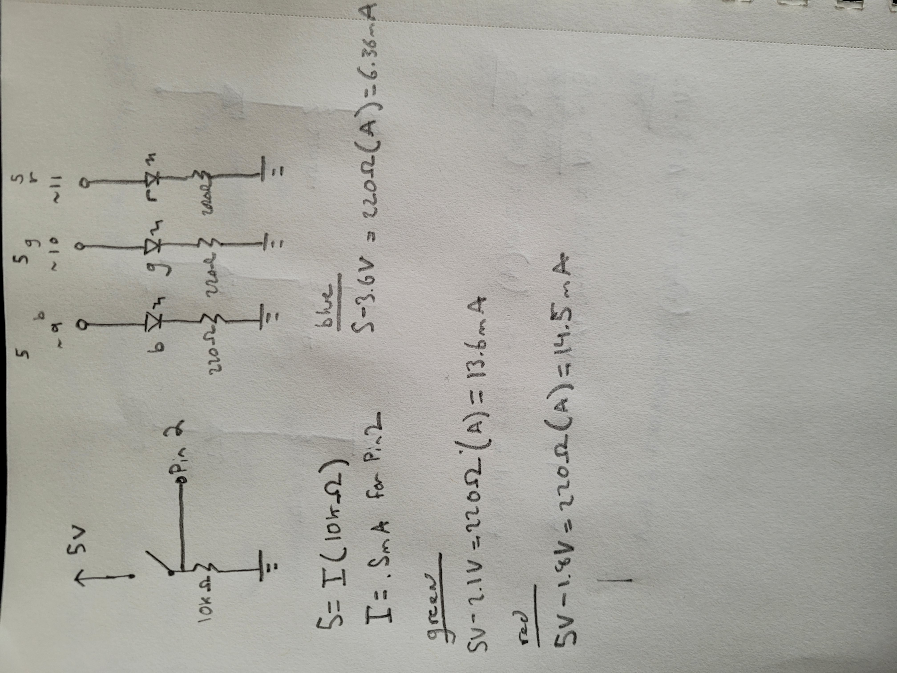

Shivank's Assignment 2!
for this assignment, I created a system that fades from purple to orange while a button is pressed.
Image of the circuit.

Image of the schematic and calculations. I set the LED resistors to 220 Ohms to keep the mA within an acceptable range. I also added a 10K resistor to the button to limit the current that the pin reads. With a 10k resistor, the current is .5mA. This is to avoid floating pins. and have the LOW and HIGH values distinct from each other.
This is the code...
int buttonPin = 2; // initialize button pin
int red = 11; // initialize red pin
int green = 10; // initialize green pin
int blue = 9; // initialize blue pin
int constrainedVal = 0; // initialize constant to limit analog value
int buttonState = 0; // initialize button state
void setup() {
pinMode(red, OUTPUT); // define pin as output
pinMode(green, OUTPUT); // define pin as output
pinMode(blue, OUTPUT); // define pin as output
pinMode(buttonPin, INPUT);// define button as input
}
// the loop function runs over and over again forever
void loop() {
buttonState = digitalRead(buttonPin); // reads the button state
if (buttonState == HIGH) { // if the button is on...
digitalWrite(blue, HIGH); // Sets pins as HIGH
digitalWrite(red, HIGH); // Sets pins as HIGH
digitalWrite(green, LOW); // Sets pins as HIGH
// --------------- Purple! ---------------- //
for (int i = 0; i < 255; i+=5) { // loops through 1-255, going up by 5.
constrainedVal = constrain(i, 0, 100); // sets a constraint value to limit analog to 100
analogWrite(red,constrainedVal); // writes constrained value to red pin. This is to not overpower the color with red.
analogWrite(blue, i); // blue goes up incrementally
analogWrite(green, 0); // green is off
delay(5); // 5ms delay
}
for (int i = 255; i > 0; i-=5) { // loops from 255 to 5, going down by 5.
constrainedVal = constrain(i, 0, 100); // sets a constraint value to limit analog to 100
analogWrite(red, constrainedVal); // writes constrained value to red pin. This is to not overpower the color with red.
analogWrite(blue,i); // blue goes up incrementally by i.
analogWrite(green, 0); // green is off
delay(5); // 5ms delay
}
// ---------------- Orange! --------------- //
for (int i = 0; i < 255; i+=5) { // loops through 1-255, going up by 5.
analogWrite(blue,0); // blue is off
analogWrite(red, i); // red goes up incrementally by i.
analogWrite(green, i); // green goes up incrementally by i.
delay(5); // 5ms delay
}
for (int i = 255; i > 0; i-=5) { // loops from 255 to 5, going down by 5.
analogWrite(blue, 0); // blue is off.
analogWrite(red, i); // red goes up incrementally by i.
analogWrite(green, i); // green goes up incrementally by i.
delay(5); // 5ms delay
}
} else {
digitalWrite(red, LOW); // turns red pin off when button is not pressed.
digitalWrite(blue, LOW); // turns blue pin off when button is not pressed.
digitalWrite(green, LOW); // turns green pin off when button is not pressed.
}
}
This is the fade in practice!!